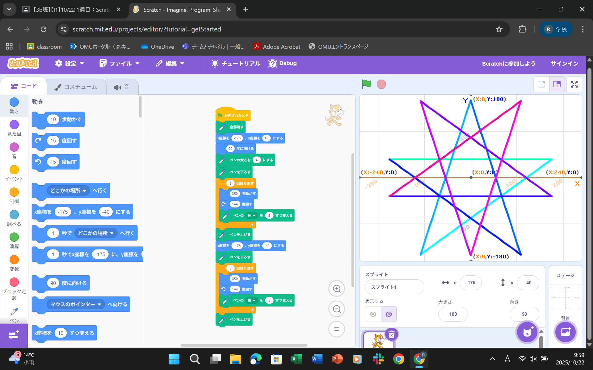
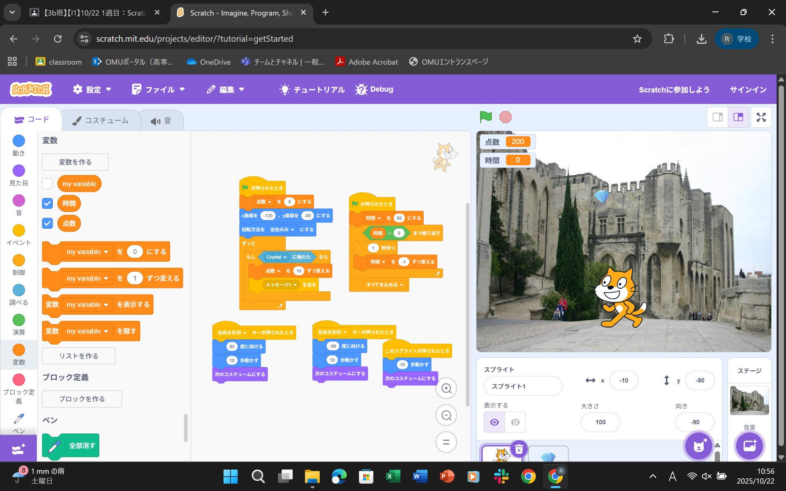

1週目のレポート ： 公大高専１年実習I-1
3b班40番 やがみん
第1週目
1-1 サイエンスアート

1.内容
スクラッチにて、猫を歩かせたり方向転換させたりした。
また猫が歩いた軌跡にペンで線を描くプログラムも書いた。
線の色を猫が方向転換するたびに少しずつ変えた。
2.感想
スクラッチでブロックを組んでも、実行するまでは目に見えて動かないため、
試行錯誤しながら微調整することが大事であるとわかった。
方向転換は試行錯誤をしなくても計算で求めることができた。
1-2 ゲーム

1.内容
上から落ちてくるダイヤに猫が触れると点数が入る。
ダイヤの速さや落ちてくる位置はランダムに設定している。
時間制限を設けることにより、ゲームとしての楽しさも上げた。
2.感想
乱数を使うことにより、指定した範囲の中での数字をランダムに吐き出すことができる。
これによりサイコロなど、ランダムが必要な場面に対応することができるとわかった。
1-3 ホームページ作成
私のホームページ
1.内容
HTMLというプログラミング言語を使うことにより、自分のHPを作ることができる。
文書を書く時とは異なり、Enterを押すだけでは改行できないため、文末に"br"を追加する必要がある。
2.感想
HTMLを使ったことがないため、プログラムを見ても何もわからなかったが、
よく見てみると今回の実習で使用しているのは、とても複雑で難しいプログラムというわけではなさそうなので
簡単なものであれば勉強すれば作れそうだと思った。
各ページへのリンク
1週目のレポート
2週目のレポート
3週目のレポート
私のホームページ